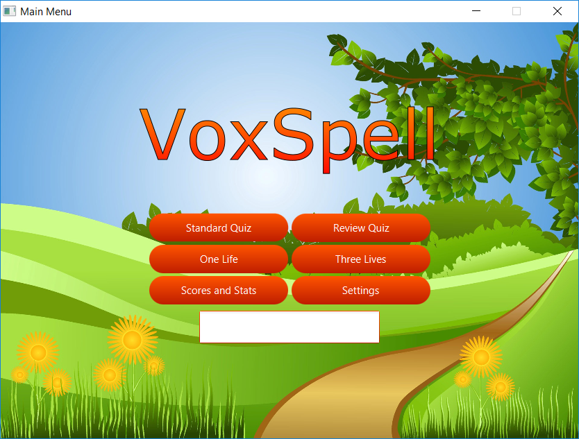

Projects
A peak into my personal endeavours
Browse through the projects I've worked on, both in Uni and in my own time.
University Projects
- 
VoxSpell
VoxSpell is a Java application aimed at improving young students' spelling proficiency through a series of fun quizzes. The user provides the list of words in a specified format, the application reads it into the system and tests the user verbally in a variety of modes. Feedback is available for each queried word, for each failed and succesful attempt. Voxspell was a 6-week long project, split into three stages - two stages developing by myself and one stage with a partner.

Baroque Buddy
Baroque Buddy is a Hi-Fi web prototype for an assistant teaching tool, designed to provide students a persistent space to complete their assignments in their Baroque Architecture course. Students are able to look over the assignment brief, complete and submit the assignment and provide peer feedback to others' submissions. Users can also message each other, including the teacher if they are stuck. This prototype is a mock-up, with enough functionality implemented to provide an accurate portrayal of the proposed tool. Designed over four weeks and implemented in one using HTML/CSS/JS.
Personal Projects

Mother's Day Website
On Mother's Day 2016 I decided to use my creative side and design a website as a present for my Mum. The ulterior motive was to show her that my days spent at University aren't all for nothing. I used my cheesiest lines and kindest words, along with a collection of photos I had amassed over the years to create something special. When it was revealed, she cried tears of joy so I'd consider it a success. Although the use of weebly to build the website isn't as technical as some other entries on this list, I am still proud of it and what it represents.

My Portfolio Website
As I'm sure you're aware, my portfolio website is a medium to display information about me and what I'm working on. It is a great resource to show to employers so they can get a feeling of the person I am and what I enjoy spending my time doing. It is the perfect project for me because of the endless alterations I can work on, all while expressing my enthusiasm for web development.

Chess
A Java application that I'm currently developing, to refamiliarise myself with Object-Oriented programming. I'm designing and programming it by myself and following coding conventions as strictly as possible. I enjoy the game itself and thought it a challenging enough task to program it in Java. Once I've finished the Java implementation, I hope to repeat the process using a Mobile App environment instead.

PlayNine
This interactive game, available on this website, is a small project illustrating my interest and intent in learning more about the React JavaScript library. I followed a basic tutorial to get to this stage and intend on progressing further to advanced courses. Learn more about the game itself by clicking the photo or title above or navigate to the page using the side menu on the left.